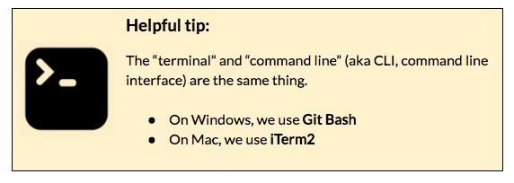

Prep Work
Open Slack
If you have a tip that helped you with a step on the worksheet, you can easily share it with the group in Slack. Or if there are any issues with the worksheet [we make typos or there's an update to a tool that we didn't catch before the session], we may post updates in Slack. Plus, after class is over, Slack becomes a tool for you to gain access to mentors as you go through the homework, or any other questions that arise.
Install/Update Node.js & npm
In the second part of this session, we use a tool called Yeoman, which we install using npm [a package manager, which we'll cover in detail in the August session]. npm requires we install Node.js [which we'll cover in the September session], all you need to know about them for this session is how to install or update these tools.
Open your CLI (Command Line Interface) [Git Bash (windows) or iTerm2 (macs)] 
In your CLI, type:
node --version
Do you get a version number?- If your version number is greater than 6, proceed to step 3.
- If your version number is less than 6, you'll need to update your version of Node.
- Download the Current installer for Windows [v.7.9.0].
- Double-click on the downloaded file & follow the installation prompts.
- When that finishes, confirm
node --versionreturns a version > 6.
- No version number, you need to install Node.
- Download the Current installer for Windows [v.7.9.0].
- Double-click on the downloaded file & follow the installation prompts.
- When that finishes, confirm
node --versionreturns a version > 6.
Let's check your version of npm [which was installed with Node].
In your CLI, type: npm --version
- If your version number is greater than 3 proceed to step 4.
- If your version number is less than 3, update to the latest by typing:
npm install npm -g
If you're using a Mac, you're ready for Part I! Windows users, you have one more set-up check.
Yeoman & Git Bash don't play nicely out of the box, so we'll need to run Bash in the Window's native cmd.exe [Command Prompt].
- Find & open the Command Prompt program on your computer.
- Type the following into the Command Prompt:
"C:\Program Files\Git\bin\bash.exe" --login -i - If your CLI looks like the following, you are ready for Part I.

If your CLI doesn't look similar to the error, grab a mentor. You may need to adjust the path to bash [
C:\Program Files\Git\bin\bash.exethis part of the command you typed]. And if that doesn't work, install the full version of cmder [another Console emulator for Windows].